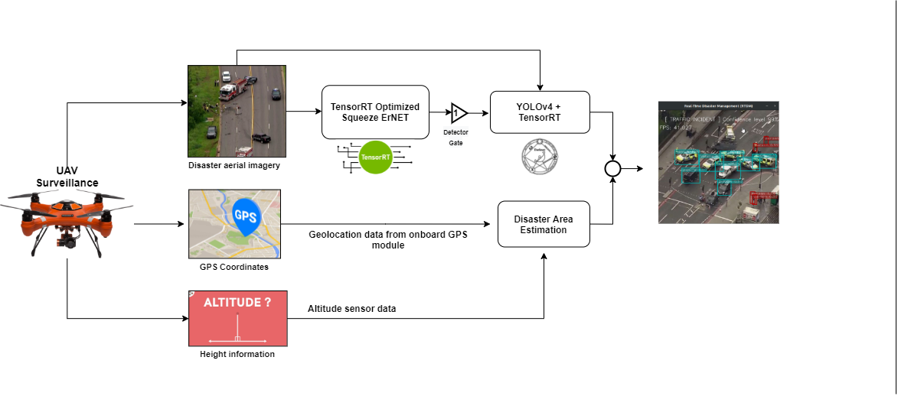

My research focuses on generative modeling, perception, and decision-making under
severe information and resource constraints, spanning video, neural signals, and
embedded vision systems.
Perceptual Video Compression with Diffusion Models
Status: Completed (Master’s Research)
Problem
Ultra-low bitrate (ULB) video delivery in the range of 0.005–0.02 bpp
remains largely unsolved. Classical codecs such as H.264 and HEVC optimize for
pixel-level distortion and exhibit severe perceptual degradation at these rates.
Method
I developed the first diffusion-based learned video codec capable of operating
effectively in this regime. The encoder transmits only sparse, high-level semantic
priors—latent keyframes and lightweight motion trajectories—while a controllable
diffusion model at the decoder synthesizes temporally coherent intermediate frames.
Architecture
Key Contributions
Semantic-guided generative video codec operating below 0.02 bpp.
Trajectory-aware synthesis improving temporal coherence and perceptual quality.
Comprehensive benchmarking against H.264, HEVC/VVC, and learned codecs.
EEG → Image Reconstruction with Generative Models
Status: Ongoing
Motivation
This project investigates how visual information is represented and can be
reconstructed from neural signals under extreme information constraints.
The goal is to bridge computational neuroscience and generative modeling.
Approach
I work with EEG and fMRI data using established neuroscience toolkits (EEGLAB, MNE)
and large-scale public datasets such as THINGS and NSD. Reconstruction is framed as
a probabilistic inference problem, explicitly modeling uncertainty, noise, and
information bottlenecks.
Current work focuses on diffusion-based EEG-to-image reconstruction pipelines and
prototyping real-time systems that address latency, robustness, and entropy
constraints inherent to neural signals.
Real-Time Disaster Management (RTDM) on Embedded UAV Platforms
Status: Completed (Undergraduate Research)
Problem
Disaster response scenarios require rapid situational awareness under strict
constraints on computation, power, and latency. UAV-based systems must operate
fully on-board while performing accurate disaster detection and victim localization.
System Overview
I designed a Real-Time Disaster Management (RTDM) module that sequentially integrates
quantized image classification and object detection models. The system processes
live UAV camera feeds and communicates actionable insights to a ground control station.

Key Contributions
Designed Squeeze-ErNet, a quantized architecture achieving
~94.4% accuracy at ~510 FPS on NVIDIA Jetson TX2.
Systematic evaluation of quantization schemes for performance–accuracy trade-offs.
Created the ODDER dataset for aerial emergency response
(2 classes, 1400+ images).
Deployment and power analysis on embedded UAV hardware.